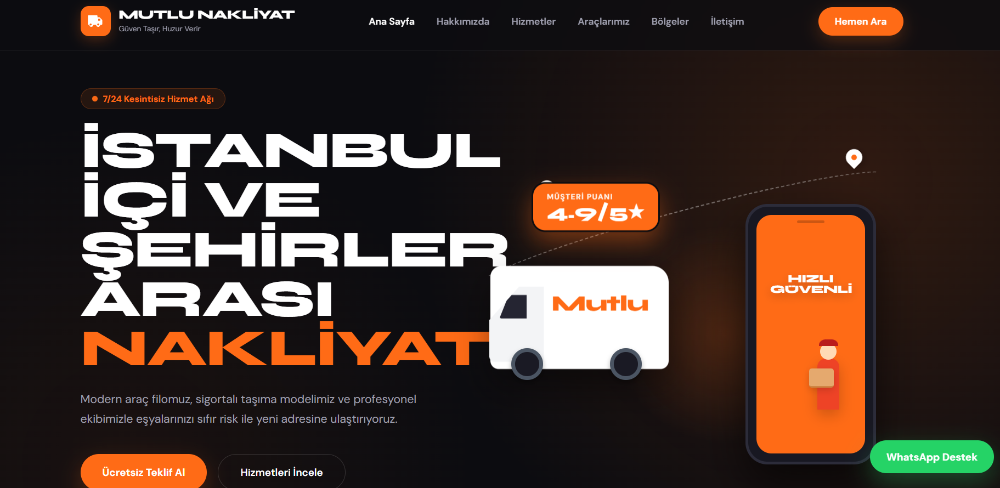
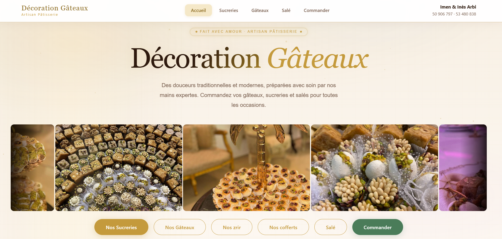
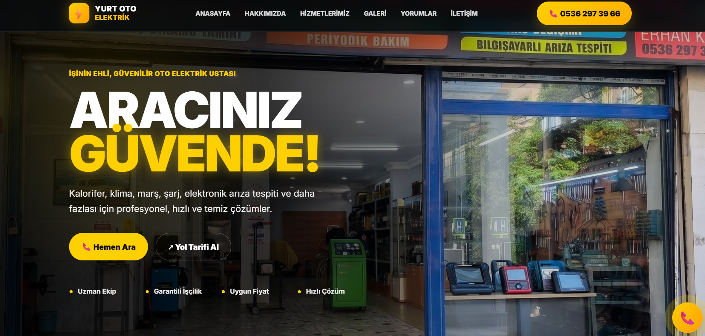
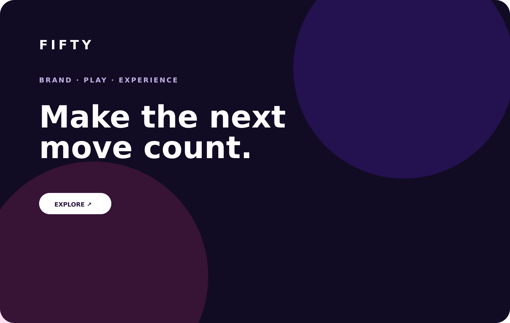

AuraDigital / Portfolio
Selected work · 2026
Let our work speak for itself.
Digital experiences designed for businesses across different industries. We do not reuse one template; we build the system that fits each brand.
WebsitesDigital presenceBrand systemsMobile-first


